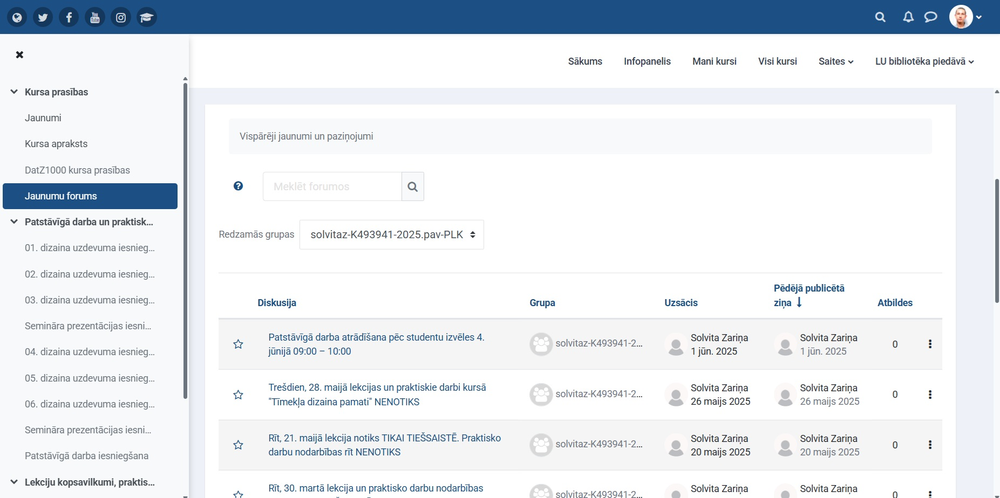
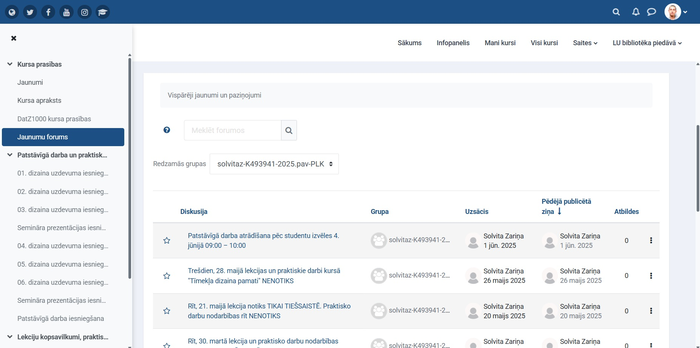

Mana pirmā pieredze ar Latvijas Universitātes e-studiju vidi bija aizraujoša, bet nedaudz mulsinoša...
Mana pirmā pieredze ar Latvijas Universitātes e-studiju vidi bija aizraujoša, bet nedaudz mulsinoša...

LU e-studiju vide piedāvā ērtu piekļuvi visiem studiju materiāliem vienuviet...

Testi un uzdevumi e-vidē ir ļoti ērti izstrādāti...
 

Saziņa e-vidē ir svarīgs aspekts, kas nodrošina kontaktu ar pasniedzējiem...

Sākumā bija grūti un neierasti izmantot e-studiju vidi...